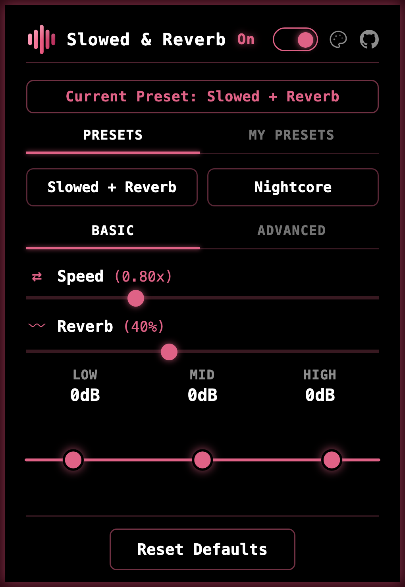

−3.9 semitones74 bpm
That is the whole idea. The extension does this to whatever is playing on YouTube, YouTube Music or the Spotify web player, live, on your own computer. Pitch follows speed the way tape does. Free and open source, with nothing to unlock.

The rest lives in one small panel.
Open it on the tab you are playing. Speed and reverb are the two sliders you just used. Under them, a three-band EQ you drag into shape. An Advanced tab adds echo, pan, stereo width, saturation, and a switch that keeps the original pitch while the track slows down. A limiter runs underneath so extreme settings never distort.
Two presets come built in, Slowed + Reverb and Nightcore. Save your own under a name, give the three commands keyboard shortcuts if you like, and pick one of four looks.
The extension asks for access to a site the first time you open the popup there. Spotify stays untouched until you allow it. Nothing is sent anywhere, and there is no account, no analytics and no ads. Privacy policy